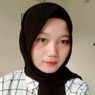
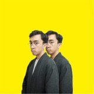
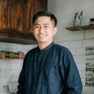
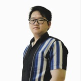
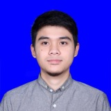
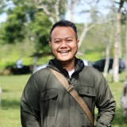
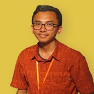
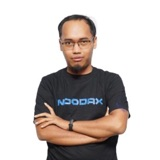

Testimonials
Recommendations from designers, product managers, engineers, and QA engineers I have worked with, written on my LinkedIn profile. Read the originals on LinkedIn.
Desphi is one of the most thoughtful leads I have worked with. Leading a QA team means dealing with different personalities, different working styles, and different pressures at the same time, and he handled that consistently well. He listened first, made decisions with clear reasoning, and kept the team aligned without micromanaging.
Beyond day-to-day management, he actively drove initiatives that strengthened our QA process, and he made knowledge sharing a habit rather than an occasional event. Whether it was a technical practice or a broader lesson about how we work, he made sure the team walked away with something useful.
I learned a lot working with him, and I would recommend him to any team looking for a QA lead who genuinely invests in the people around him.
Software Quality Assurance
Working with Desphi has always been a great experience. During our first year working together, we collaborated closely on building an Android mobile application, where he consistently brought a critical eye to product quality beyond just functional requirements. From a designer's perspective, I especially appreciate his clear communication, collaborative approach, and attention to details that can impact the overall user experience.
Senior Product Designer
I very recommend Satria as a professional quality assurance. I worked with him for about 2 years, he was very detailed and critical. He is the best partner, friend and mentor. I am sure Satria will contribute optimally to a team. Good luck, Satria, thank you for the extraordinary experience as a partner at Agree.

Erna Novia SafitriQA Engineer
Desphi has been an invaluable member of our team as a meticulous and dedicated Quality Assurance professional. He attention to detail, perseverance, and thorough documentation have significantly contributed to the overall quality of our projects. Desphi excels in automation testing, showcasing her technical proficiency and efficiency. He commitment to delivering high-quality work is commendable, and I highly recommend Desphi for his exceptional skills and contributions to any QA role. He is an asset to any team, and his expertise ensures the successful delivery of reliable and top-notch software products.
Digital Product Manager
As a UI designer, my collaboration with Desphi in the realm of Quality Assurance has been nothing short of exceptional. Desphi brings an amazing attention to detail to every project, ensuring that the design not only meets but exceeds the highest standards. His diligence in the Quality Assurance role has been instrumental in ensuring that the design flows seamlessly and aligns perfectly with the feasibility requirements of the developer team.
Desphi is not only a diligent person in his professional capacity but also a pleasure to work with. I have been very happy working alongside him, appreciating not only his professional competence but also his pleasant demeanor, both within and outside of the workplace. His positive attitude and attention to detail make him an outstanding professional in the field, and I wholeheartedly recommend Desphi for any role that values a combination of design expertise, Quality Assurance proficiency, and a personable, collaborative approach.

Muhamad Gibran AugusthikoUI Designer
As a UX Designer, I can't emphasize enough how crucial Desphi's role as a QA Engineer is in our collaborative projects.
Desphi's meticulous attention to detail, unwavering commitment to quality, and remarkable technical capabilities have been an absolute game-changer for our team. Desphi, you are not just a QA Engineer; you are the guardian of quality who ensures that every user interaction is flawless. Your ability to spot even the tiniest imperfections, your thorough test planning, and your expertise in automation and manual testing make you an invaluable asset to our team. Thank you, Desphi, for your exceptional skills and tireless commitment to quality. Your partnership has been a cornerstone of our success, and I'm eager to continue our collaborative journey together.
UX Designer
I know Desphi so well. I usually call him Kang Desphi (Kang = Brother in sundanese). We have been working for around 2,5 years. He is so detail, a great friendly reminder for the team. Also not afraid to always face the new challenge in product. Also a hardworker, because he will work through nights and weekends if he asked to. Whoever work with Kang Desphi, will be one of the luckiest team because he will find bugs, defects, or any frauds that anyone else might not find. I wish you all the best, Kang Desphi. Love you, Brother. ❤️

Sang Made NaufalDigital Product Manager
He understands the software code deficiencies. He understands testing software and how to improve its efficiency. He could place software under severe stress to test its mettle. Desphi's creativity is his top trait. Desphi has an enterprising thought process and personality that is continually thinking out-of-the-box.

Joseph SanjayaSoftware Engineer (Android)
Desphi is a professional and great QA Engineer, I've collaborated with him for almost a year. He's a good analyst problem and enterprising thought process. I'm happy to discuss with him about user experience.

Rizky DestianUI Designer
Desphi has a strong understanding of testing methodologies and is skilled at designing and executing test cases. He also have excellent communication skills and are a valuable member of any team. In particular, Desphi played a key role in finding and fixing a particularly tricky bug that had been plaguing our project for weeks. I highly recommend Desphi as a QA engineer – he is reliable, competent, and always a pleasure to work with.

Ariya Agustian RiyadhiFull Stack Developer
Saya sangat antusias untuk merekomendasikan Kang Desphi sebagai seorang profesional QA yang luar biasa. Selama bekerja sama pada produk Agree Marketplace B2B di Tribe Agreeculture di Telkom Indonesia, Kang Desphi telah menunjukkan tingkat dedikasi yang sangat tinggi terhadap pekerjaannya.
Dalam peran QA-nya, Kang Desphi tidak hanya sekedar mengecek fitur yang telah saya kembangkan sebagai front-end developer, tetapi benar-benar mengawal setiap detail untuk memastikan fitur tersebut tidak hanya berfungsi, tetapi juga memberikan pengalaman pengguna yang optimal. Dedikasinya untuk memastikan bahwa setiap fitur dapat digunakan dengan baik oleh pengguna kami luar biasa.
Apa yang membedakan Kang Desphi adalah komitmennya untuk melakukan proses checking dengan sangat komunikatif terhadap timnya. Ia tidak hanya mengidentifikasi masalah, tetapi juga secara proaktif berbagi temuannya dengan tim, memastikan bahwa setiap anggota tim memiliki pemahaman yang mendalam tentang setiap aspek produk. Inilah yang membuatnya bukan hanya seorang QA biasa, tetapi seorang mitra tim yang tak tergantikan.
Dalam banyak kesempatan, saya telah melihat Kang Desphi melibatkan diri dengan sangat mendalam untuk memastikan bahwa setiap detail terkendali dan kualitas produk tetap konsisten tinggi. Dedikasinya untuk menyempurnakan setiap aspek pekerjaannya membuatnya menjadi sumber inspirasi bagi seluruh tim.
Jika Anda mencari seorang QA yang tidak hanya berdedikasi, tetapi juga mampu membawa dampak luar biasa pada kualitas produk, Kang Desphi adalah pilihan yang sangat cerdas. Saya yakin bahwa kontribusinya akan menjadi nilai tambah yang signifikan untuk setiap proyek atau tim yang dia ikuti.
Jangan ragu untuk menghubungi saya jika Anda membutuhkan informasi lebih lanjut. Semoga rekomendasi ini memberikan gambaran yang kuat tentang dedikasi dan keunggulan Kang Desphi sebagai seorang QA.

Otrinanda GandhiFrontend Developer
I am pleased to recommend Mr. Desphi Satria as a highly skilled professional in the field of Quality Assurance. During our time working together at Agree Mart, I have been impressed by Desphi's dedication to ensuring exceptional product quality.
Desphi possesses a profound understanding of testing methodologies and demonstrates strong technical proficiency in bug identification and resolution. His diligence in ensuring that every product meets the highest quality standards is one of his standout qualities. Desphi is also adept at collaborating with cross-functional teams to enhance testing process efficiency.
Furthermore, Desphi is highly proactive in identifying opportunities to improve existing QA processes and consistently strives to achieve optimal outcomes. Effective leadership and excellent communication skills make him a valuable asset to the team.
I am confident that Mr. Desphi Satria will make significant contributions to any QA project in the future. If you are seeking a committed, skilled, and results-oriented professional in the field of Quality Assurance, I wholeheartedly recommend Mr. Desphi Satria.

Abdul Hafiidh SSoftware Engineer (Android)